Indikator-Indikator Umum Dalam Analisis Teknikal
Indikator-indikator tersebut digunakan untuk memastikan apakah analisis yang dilakukan memiliki probabilitas ketepatan yang tinggi atau tidak. Hasil analisis yang didukung oleh indikator-indikator akan mempunyai probabilitas ketepatan yang lebih besar. Ingat, tidak ada analisis yang 100% benar. Berikut adalah beberapa indikator yang sering digunakan untuk membantu analisa.
-
Volume
Volume mendeteksi besar kecilnya jumlah pembelian atau penjualan saham. Penembusan garis support resistance dengan volume yang relative besar disbanding rata-ratanya dianggap lebih valid, sebaliknya pembentukan trend atau penembusan garis support resistance dengan volume yang relative lebih kecil dianggap kurang valid.
Contoh:
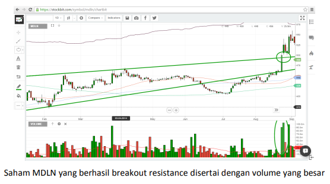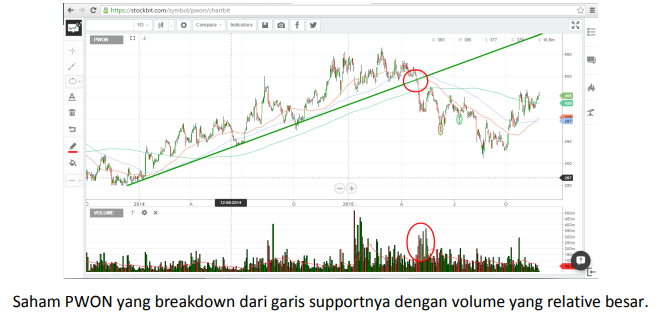Besar kecilnya volume biasanya diukur menggunakan Volume Moving Average (VMA) 20. Sama halnya seperti MA, VMA 20 merupakan garis rata-rata besarnya volume selama 20 hari kebelakang.
-
Foreign Flow
Foreign flow adalah fitur spesial yang dimiliki chartbit yang berguna untuk mendeteksi pergerakan dana asing di suatu saham. Penggunaan foreign flow didasarkan pada pemikiran bahwa dana asing di IHSG masih memegang mayoritas sehingga saham-saham yang sedang diborong oleh asing memiliki probabilitas untuk naik lebih besar. Garis foreign flow yang naik menunjukkan bahwa terjadi pembelian bersih oleh broker asing. Sebaliknya, garis foreign flow yang turun menunjukkan bahwa terjadi penjualan bersih oleh broker asing. Berikut contohnya:
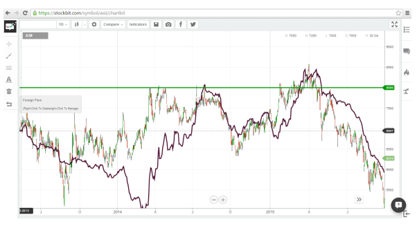Pada gambar merupakan contoh foreign flow pada saham ASII. Terlihat jelas pada saat garis hitam foreign flow turun, dimana berarti asing melakukan net sell, maka pergerakan sahamnya juga cenderung turun. Sebaliknya ketika garis foreign flow bergerak naik, dimana berarti asing melakukan net buy, harga ASII juga cenderung mengalami penguatan.
-
Net Foreign Inflow/Outflow Harian
Indikator ini dapat melihat seberapa besar dana asing masuk atau keluar setiap hari. Jika histogram berwarna hijau maka terjadi inflow dan outflow jika histogram berwarna merah.
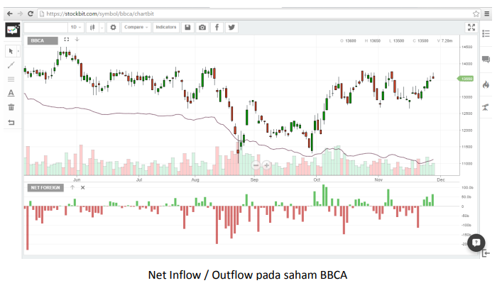 -
Foreign Strength
Foreign Strength menunjukkan seberapa kuatnya transaksi pada hari itu. Jika indikator hijau maka pergerakan asing di saham tersebut akan cukup relevan dan berpengaruh. Jika merah maka korelasi foreign flow terhadap saham tersebut relative rendah.
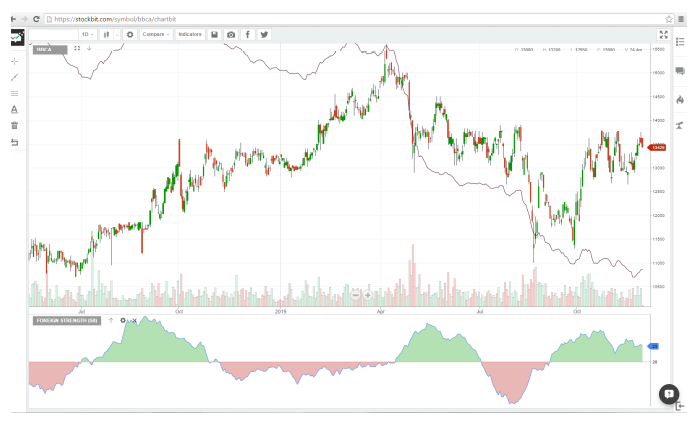Pada beberapa kasus, ada saham yang garis foreign flow-nya naik terus, namun harganya justru terus terkoreksi. Inilah yang dinamakan divergence, dimana pergerakan harga berlawanan atau tidak sesuai dengan indikatornya. Contoh kasus divergence pada foreign flow terdapat pada saham RALS berikut ini:
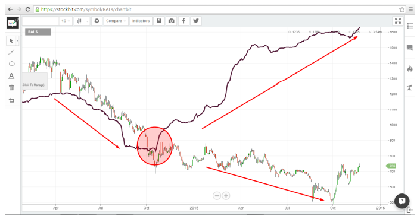Hasil Analisis:
Kemungkinan terbesar dalam kasus seperti ini adalah asing sedang melakukan akumulasi jangka panjang. Harga yang terus turun dilakukan agar retail yang memegang saham ini akhirnya menyerah dan melepas sehingga proses akumulasi berjalan lancar. Diperkirakan setelah cukup mengakumulasi, pada titik tertentu, akhirnya harga akan dibawa naik. Tetapi tidak menutup kemungkinan juga untuk harganya terus turun.
-
Consensus
Consensus merupakan fitur special chartbit lainnya yang menunjukkan target harga suatu saham berdasarkan atas hasil analisis para analis. Ada tiga jenis consensus yaitu consensus high, consensus median, dan consensus low. Consensus high merupakan target harga paling tinggi yang dipublish oleh analis, sedangkan consensus low merupakan target harga paling rendah yang dipublish oleh analis. Consensus median merupakan nilai tengah dari hasil analisis para analis. Harga consensus terus berubah dari waktu ke waktu mengikuti target harga yang dikeluarkan para analis.
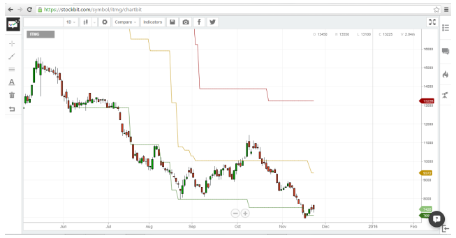Pada gambar merupakan contoh garis consensus price pada saham ITMG yang sedang bergerak di sekitar garis consensus low. Consensus price low seringkali dijadikan support kuat untuk saham bersangkutan, consensus price median menjadi target harga wajarnya, dan consensus price high menjadi target tertinggi atau resistance kuat saham tersebut.
-
Relative Strength Index (RSI)
RSI adalah salah satu momentum indicator yang penggunaanya terutama untuk melihat seberapa kuat trend suatu saham. Garis RSI mempunyai rentang dari 0 hingga 100. Pada dasarnya, bila garis RSI sudah masuk rentang 70 keatas berarti saham tersebut sudah mulai jenuh beli. Sebaliknya, bila garis RSI masuk rentang 30 kebawah, maka saham tersebut sudah mulai jenuh jual. Saham-saham yang memasuki area overbought memiliki probabilitas besar untuk koreksi, sebaliknya saham-saham yang memasuki area oversold memiliki probabilitas besar untuk rebound.
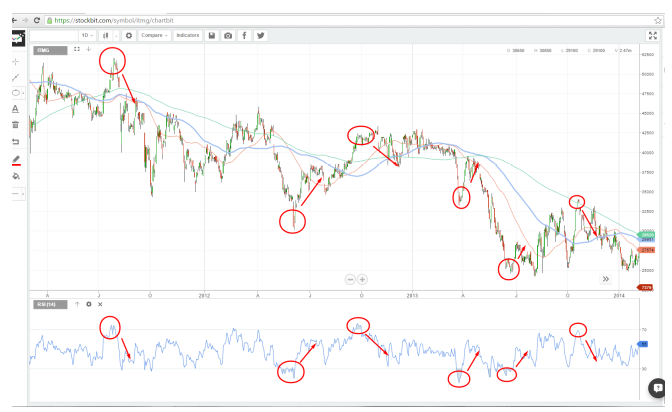Gambar merupakan contoh penggunaan RSI pada saham ITMG. Setiap garis RSI memasuki area overbought atas maka terjadi koreksi, begitu juga ketika garis RSI memasuki area oversold bawah maka terjadi rebound.
Sama halnya seperti Foreign Flow, pada RSI juga bisa terjadi kondisi divergence. Terdapat dua jenis divergence yaitu bullish divergence dan bearish divergence.
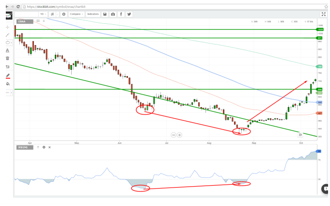Pada gambar merupakan contoh bullish divergence, dimana terlihat garis RSI membentuk pola higher low, yang berarti sebenarnya trend pelemahan mulai terbatas, namun harganya membentuk harga terendah baru, berlawanan dengan trend RSI-nya. Tidak lama setelah divergence terjadi harga langsung menguat drastic, bahkan hingga menembus garis MA50 (Merah) dan MA100 (Biru) sekaligus.
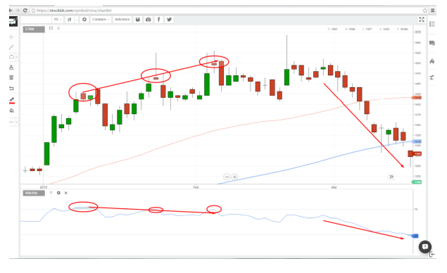Gambar di atas merupakan kasus bearish divergence seperti yang dapat dilihat pada saham CTRA diatas. Harganya terus mencetak level tertinggi barunya sedangkan garis RSI terus membuat penurunan yang menandakan trend penguatannya semakin melemah. Tidak lama setelahnya, harga terkoreksi cukup tajam hingga menembus MA100 (Merah) dan MA50 (Biru) sekaligus. RSI line pun turun drastic hingga memasuki area oversold.
-
Stochastic Oscillator
Sama halnya dengan RSI, Stochastic merupakan momentum indicator yang digunakan untuk mendeteksi apakah harga suatu saham sudah memasuki area jenuh jual (oversold) atau jenuh beli (overbought). Perbedaannya dengan RSI adalah Stochastic mempunyai dua buah garis, yaitu garis fast dan garis slow. Pada dasarnya, garis fast lebih cepat bergerak dibandingkan dengan garis slow.
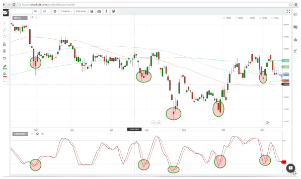Pada saat garis fast memotong garis slow dari bawah keatas, dinamakan “Golden cross”. Ini merupakan pertanda saham tersebut mempunyai probabilitas besar untuk rebound. Probabilitas semakin besar apabila golden cross terjadi di area bawah stochastic, yaitu Antara 0 – 20.

Sebaliknya, saat garis fast memotong garis slow dari atas ke bawah dinamakan “dead cross”. Ini merupakan pertanda saham tersebut mempunyai probabilitas besar untuk koreksi. Probabilitas semakin besar apabila dead cross terjadi di area atas stochastic, yaitu Antara 80 – 100.
Selain untuk mendeteksi jenuh beli atau jenuh jual, stochastic pada saham yang sedang trending juga berguna untuk menunjukkan apakah trendnya masih kuat atau tidak. Stochastic yang terus berada di area oversold mengidentifikasikan bahwa trend penurunan masih kuat dan cenderung terus berlanjut (Strong bearish).
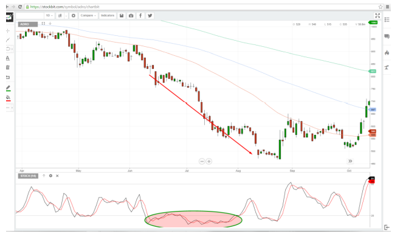Sebaliknya, stochastic yang berada terus menerus di area atas mengidentifikasikan bahwa trend penguatan masih besar dan kemungkinan besar kenaikan harga masih terus berlanjut.
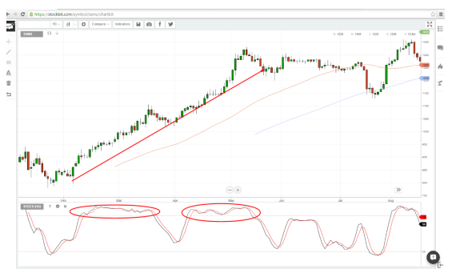Pergerakan stochastic lebih responsive dibandingkan dengan RSI, karena itu stochastic cenderung memberikan sinyal lebih cepat dibandingkan RSI, Namun karena pergerakan yang cepat, tidak jarang juga sinyal yang diberikan oleh stochastic adalah salah, sehingga dalam penggunaannya, stochastic sering digabungkan dengan indicator lain untuk memperkuat probabilitas kebenarannya.
-
MACD
Moving Average Convergence Divergence (MACD) merupakan trend following momentum indicator yang dipakai untuk melihat adanya perubahan trend dan kuat lemahnya suatu trend yang sedang berlangsung. Sama halnya dengan Stochastic, MACD terdiri dari dua garis yaitu fast period dan slow period.
Penggunaan MACD mirip dengan stochastic, hanya saja MACD tidak bergerak dalam range 0 -100 melainkan bisa terus naik setinggi-tingginya, atau turun sedalamdalamnya sesuai dengan pergerakan harga sahamnya.
Wilayah MACD terbagi dua yaitu wilayah diatas garis 0 dan wilayah dibawah garis 0. Ketika sebuah saham sedang mengalami trend penurunan yang kuat, biasanya pergerakan MACD akan terus berada di area negatif atau dibawah garis 0, sebaliknya ketika saham sedang mengalami trend kenaikan yang kuat, biasanya pergerakan MACD akan terus berada di area positif atau diatas garis 0.
Contoh kasus:
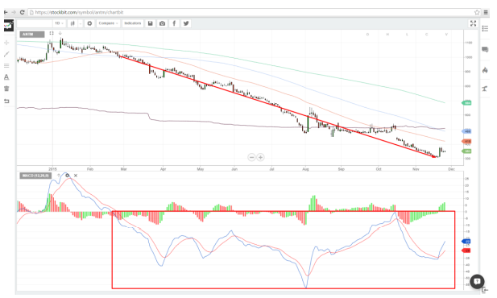MACD pada saham ANTM yang bergerak terus dibawah garis 0 menandakan ANTM yang sedang dalam posisi Strong Bearish.
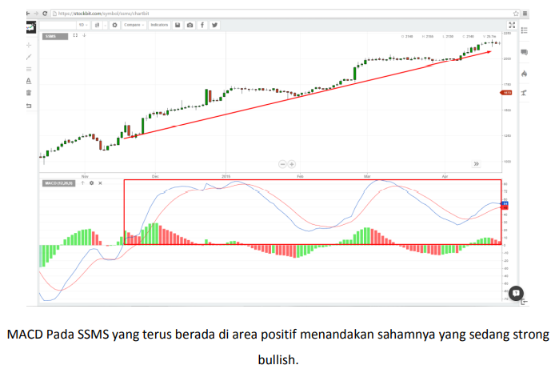Sama halnya dengan Stochastic, MACD juga mempunyai momen Golden cross dan dead cross.
Golden Cross yang terjadi saat MACD berada di daerah positif menandakan bahwa trend penaikan masih kuat. Sedangkan Golden Cross yang terjadi di area negative menandakan adanya perlawanan dan probabilitas untuk terjadi perubahan trend.
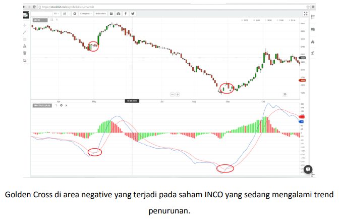Sebaliknya, dead cross menandakan bahwa adanya probabilitas harga saham akan mengalami koreksi. Dead Cross yang terjadi saat MACD berada di daerah negatif menandakan bahwa trend penurunan masih kuat. Sedangkan dead Cross yang terjadi di area positif menandakan adanya probabilitas untuk terjadi perubahan trend.
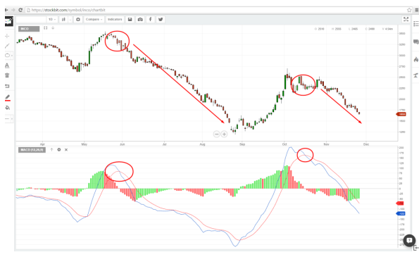Perubahan trend dapat dibilang berhasil terjadi ketika garis MACD mengalami cross over dan naik atau turun hingga melewati garis tengahnya di angka nol.
Pada MACD juga bisa terjadi divergence. Divergence membantu untuk memperkuat probabilitas bahwa akan adanya pembalikan arah pada pergerakan harga saham.
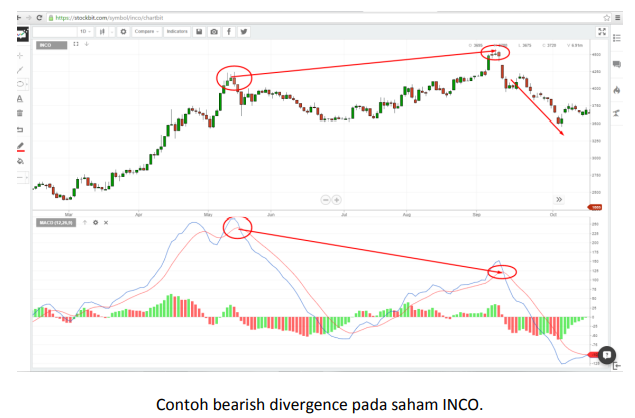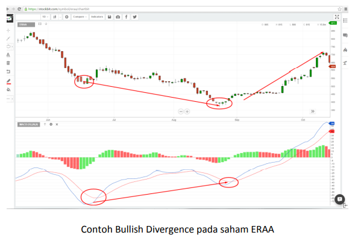